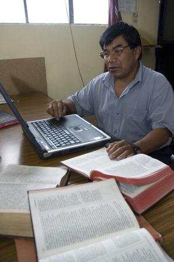
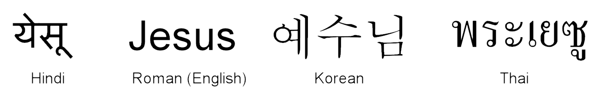

The Branchu script dates back almost 1000 years. Work was being done on a translation of the New Testament into Branchu, but there was no suitable font to use for publishing it. So they turned to NRSI for help.
The Branchu script dates back almost 1000 years. Work was being done on a translation of the New Testament into Branchu, but there was no suitable font to use for publishing it. So they turned to NRSI for help.Wycliffe uses IT very heavily in the Bible translation process. A lot of laborious work that used to take a long time manually can be done by computers – they help make the translation process better, faster and cheaper.
Much translation work is keyed in on laptop computers in the field using specialist Bible translation software.
Wycliffe, and their partner organisation SIL, have developed various software tools to make the job of Bible translation easier and faster. For example there is a tool which enables one translation to be used as the basis for another translation when two languages have many words in common.
Most new translation projects are into minority languages. These may be written using alphabets ('scripts') that standard computer software cannot handle properly, or into languages that may not have been written down before. Often the scripts are not based on the standard 'Roman' alphabet that we use with English – and even those that are may have extra letters, accents etc.
So there are many challenges to be overcome when handling these languages using computers.
The WSTech team, in which David works, was set up to provide computing resources for minority language groups around the world who write their languages in complex ways.
Their mission is to facilitate the use of non-Roman and complex scripts in linguistic study, translation, literacy and publishing.

'Branchu' is the code-name for a language which is spoken by about 300,000 people who live in a south-Asian country where Bible translation is politically sensitive. Until recently no scripture was available in Branchu.
The Branchu script dates back almost 1000 years. Work was being done on a translation of the New Testament into Branchu, but there was no suitable font to use for publishing it. So they turned to NRSI for help.
After research in the country and London, a font designer from NRSI drew a new set of shapes, based on existing versions of the script, which formed the basis of the new font. Then, working with a script engineer, they worked on reproducing the complex alignment and connections between letters to complete the font.
The New Testament was published in 2009, so Branchu speakers now have the blessing of being able to read God’s word in their own language.